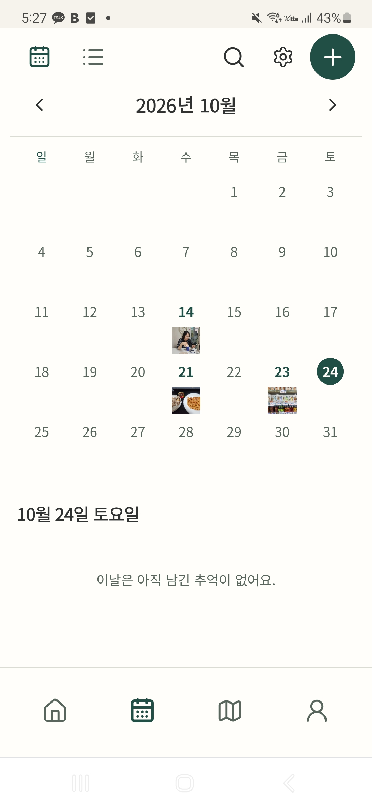
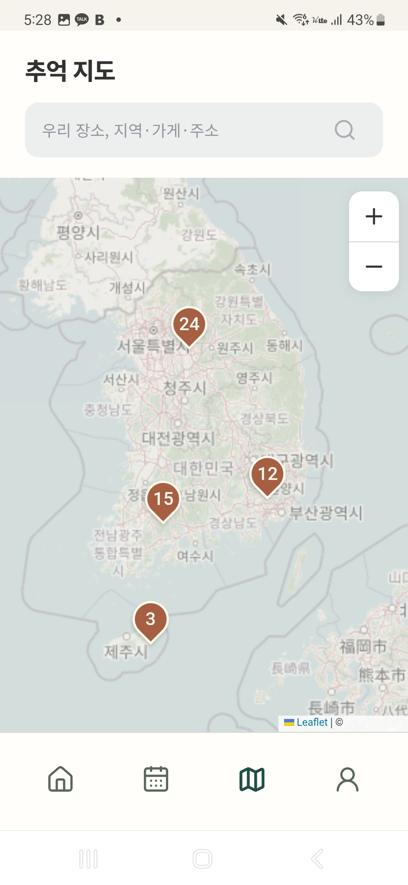
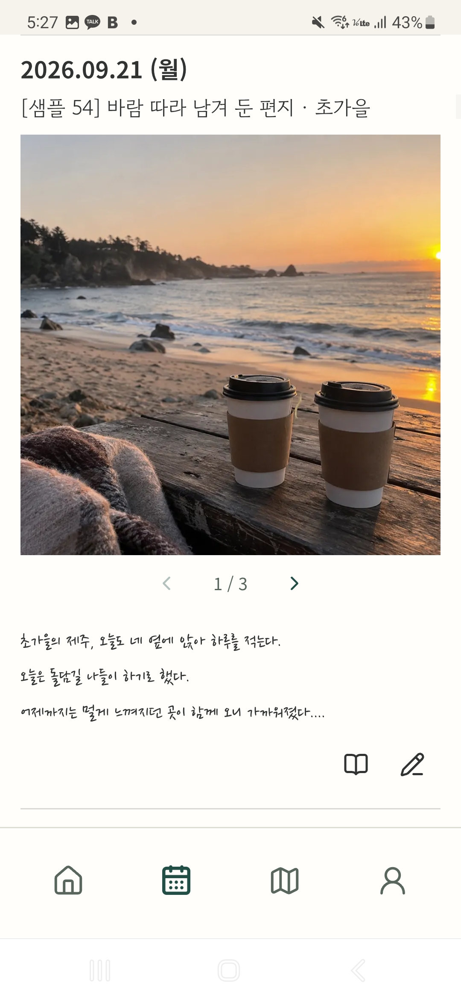

가족과 나누고 싶은 순간을 사진·글·날짜·장소로 남기는 모바일 기록 앱입니다. 함께한 날을 홈에서 확인하고, 달력과 추억 지도에서 지난 기록을 다시 찾아볼 수 있습니다.
우리여정
프로젝트 소개
주요 기능
- 홈 — 배경 사진, 프로필, 함께한 날 확인
- 기록 — 날짜·사진·제목·이야기·장소 작성과 수정
- 달력 — 날짜별 사진과 기록 탐색, 목록 전환과 검색
- 추억 지도 — 장소 검색과 지역별 기록 묶음 탐색
- 공유 — 초대로 가족 공간에 연결하고 기록 함께 보기
실제 화면




GitHub · Android
GitHub 배포 저장소 ↗ · Android 시험판 v0.2.5 ↗
GitHub에서 APK와 배포 기록을 확인할 수 있습니다. 앱 소스는 비공개입니다. Android 시험판은 인터넷 연결과 지원 브라우저가 필요한 TWA 앱입니다.